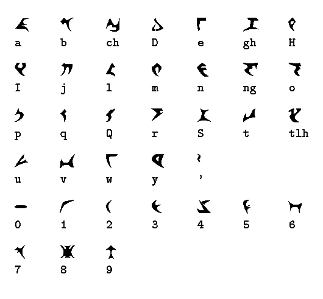
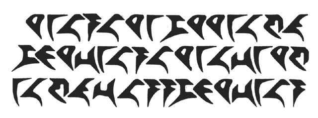
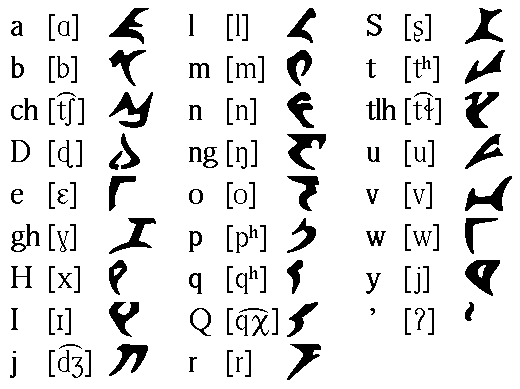
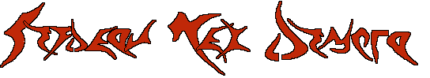
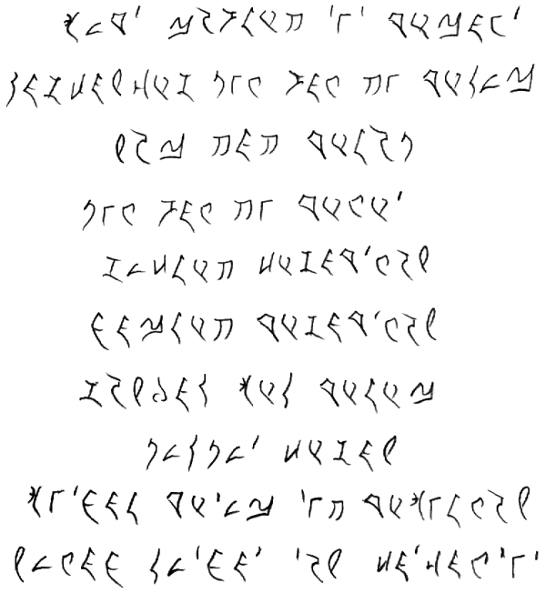

These are some pictures of the different styles of
pIqaD that I have encountered, mainly those used by Nick Nicholas, Roger
Cheesbro and myself. It is my intention to
write a more comprehensive description of the Klingon writing system
with detailed information about different styles of longhand as used
by klingonists and Klingons around the galaxy. (Sooner or later.) The
main research for this article consists of these pictures, but as of
now the pictures will have to speak for themselves.
If you have anything to contribute, you are more than welcome
to contact me <zrajm@klingonska.org>,
and share what you've got. All contributions will, of course, be fully
credited.

pIqaD à lá KLI. (Taken from from the KLI webpage.)
This is what is normally understood as pIqaD.

The Paramount version of pIqaD. (Taken from Star Trek
Encyclopedia.)
These are the glyphs that Paramount use on screen. You can see
that some of them differs quite a lot from the picture above.

Klingon pronunciation in ta' Hol written in IPA.
I verified the IPA transcription with Marc Okrand during
qep'a' chorghDIch, so this is actually canon, boys and girls.

An example of pIqaD typography in use (by Kevin A. Geiselman).
[http://www.fyi.net/~kordite/dochmey.htm]
By Zrajm C Akfohg (maHvatlh):

My own pIqaD handwriting, with additional instructions in
Swedish (Sorry).
[large image, 2982×2157 pixel]
By Roger Cheesbro (DloraH):

pIqaD calligraphic longhand by Roger Cheesbro (sent to me
in )
The first Klingon script that I've seen which actually looks
beautiful.
[large letter image,
1196×860 pixel; large number
image, 1186×332 pixel]

A small transcript from ghIlghameS made by the translator,
Roger Cheesbro.
[large
image, 762×828 pixel]
By Nick Nicholas:

pIqaD longhand. (Found on KLI's FTP-site, created by Nick Nicholas.)
When I spoke to him at the qep'a' SochDIch () he declared this more or less outdated.

The evolution of pIqaD? (Found on KLI's FTP-site, created by Nick Nicholas.)
[large image, 945×784 pixel]
©–, Copyright
Zrajm C Akfohg,
Klingonska Akademien, Uppsala.
{kind=link}
{kind=link}
{kind=link}
{kind=link}
{kind=link}